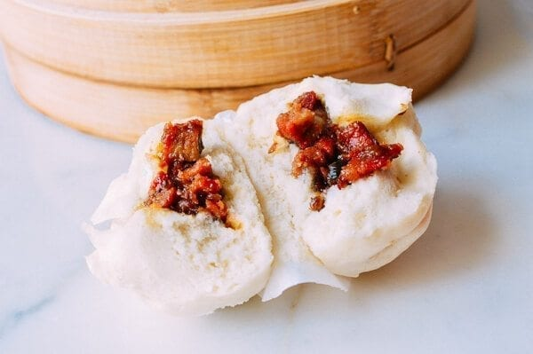

Char Siu Pork Buns

Description
Sourced From WokOfLife. "Baked char siu bao (also sometimes spelled cha siu bao), or Chinese BBQ Pork Buns,
consist of soft milk bread and a savory filling of Chinese BBQ Pork."
Ingredients
- Pork
- Chinese BBq Sauce
- Bread
- Onion
Steps
- Cook Pork in Chinese bbq sauce
- Wrap pork and onion in the bread
- Place buns in a steamer basket and steam until cooked
Back to home